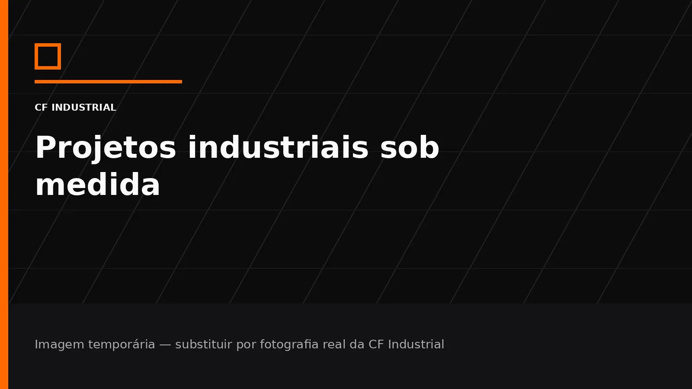

Componente cortado a laser
Base preparada para foto e descrição de peça real produzida pela CF Industrial.
Esta área foi estruturada para transformar trabalhos reais da CF Industrial em prova técnica, portfólio comercial e conteúdo relevante para busca.

Base preparada para foto e descrição de peça real produzida pela CF Industrial.
Espaço para mostrar material, necessidade do cliente, processo utilizado e resultado.
Projeto ideal para demonstrar o posicionamento da ideia à fabricação.
Área para máquinas, ferramentas, dispositivos ou recuperações do segmento.
Envie as informações do seu projeto e a CF Industrial avalia o processo mais adequado para sua necessidade.